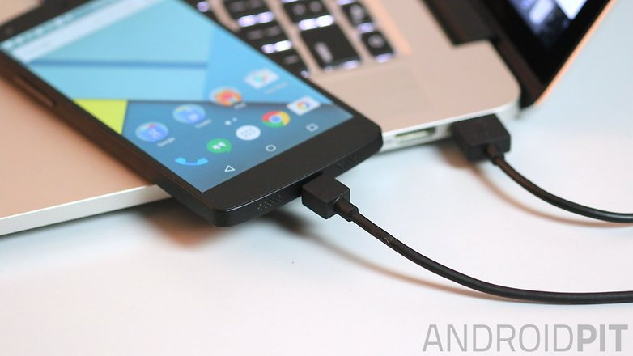
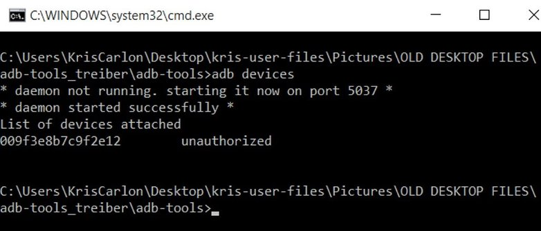
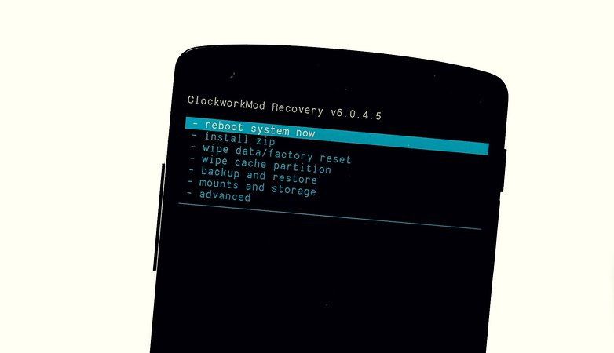
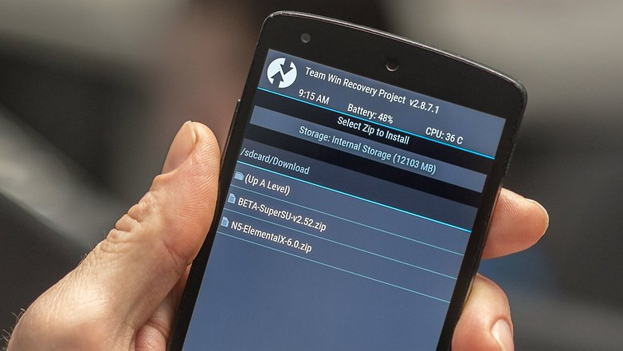
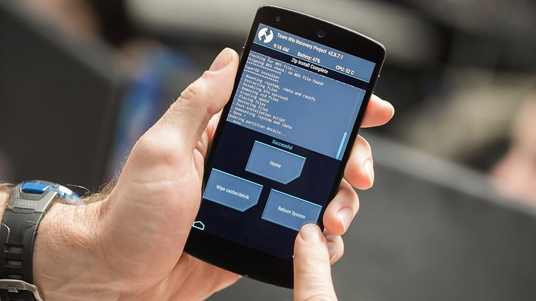

Melalui komputer download file TWRP untuk nexus 5. Lalu ubah namanya menjadi Recovery.img. Reboot Nexusmu ke menu bootloader dengan cara menekan tombol power dengan volume atas sampai terlihat gambar android hijau.

Konekkan nexusmu ke komputer. Dalam hal ini kamu harus mengunlock bootloadermu dulu. Caranya masuk ke ADB, setelah muncul CMD ketikan adb device.

Kemudian ketikkan fastboot oem unlock. sekarang kita bisa flash TWRP melalui fastboot dengan mengetikkan fastboot flash recovery.img. Cabut nexus dari komputer saat recovery selesai terinstal.

Didalam tampilan TWRP slide ke kanan untuk menjadikan TWRP menjadi default recoverymu. Kemudian pilih reboot lalu system, jangan sampai TWRP meroot nexusmu.

Cara Root Nexus 5
Sekarang kamu bisa mendownload kernel dan SuperSU untuk nexusmu. Disini saya menggunkan kernel ElementalX. Setelah selesai mendownload masuk kembali ke recoverymu. Masuk ke folder download lalu pilih kernel dan SuperSumu.

Setelah semuanya beres terinstal. klik reboot system.